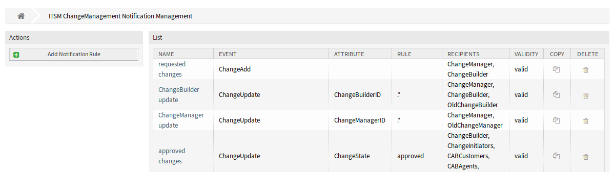
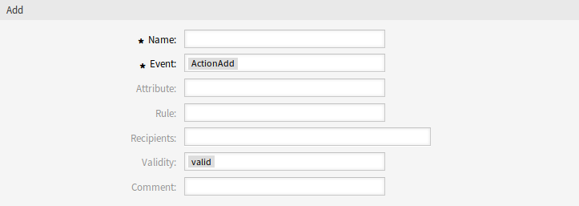
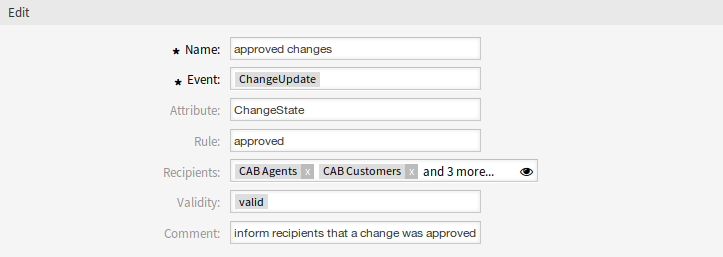
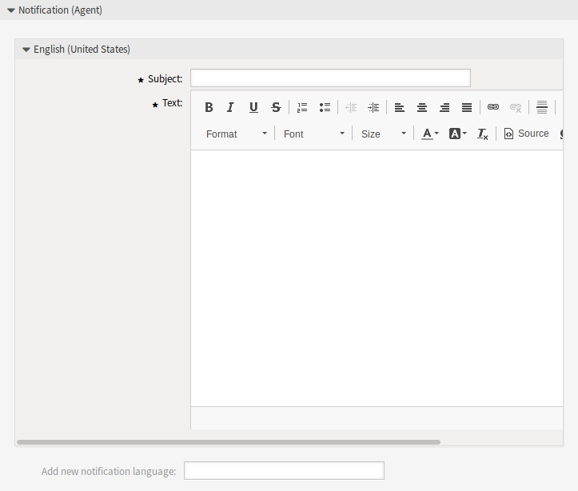

ITSM变更通知¶
使用此屏幕将ITSM变更通知添加到系统。 安装本软件包后，会向系统添加几个通知。 ITSM变更通知管理屏幕位于 通信和通知 组的 ITSM变更通知 模块中。

ITSM变更通知管理屏幕
管理ITSM变更通知¶
若要添加一个ITSM变更通知：
- 点击左侧边栏的 添加通知规则 按钮。
- 填写必填字段。
- 点击 保存 按钮。

添加ITSM变更通知屏幕
若要编辑一个ITSM变更通知：
- 点击ITSM变更通知列表中的一个ITSM变更通知。
- 修改字段。
- 点击 保存 或 保存并完成 按钮。

编辑ITSM变更通知屏幕
若要删除一个ITSM变更通知：
- 点击ITSM变更通知列表中的垃圾桶图标。
- 点击 确认 按钮。

删除ITSM变更通知屏幕
若要复制一个ITSM变更通知：
- 点击ITSM变更通知列表中的复制图标。
ITSM变更通知设置¶
添加或编辑此资源时，可以使用以下设置。 标有星号的字段是必填字段。
基本的ITSM变更通知设置¶
ITSM变更通知设置 - 基本
- 名称 *
- 此资源的名称。 可以在此字段中输入任何类型的字符，包括大写字母和空格。 名称将显示在概览表中。
- 事件 *
- 您可以在此处选择将触发此通知的事件。
- 属性
- 为该通知应该监听的字段。
- 规则
- 字段的内容，设置为 属性。
- 收件人
- 您可以在这里选择可以接收通知的组。
- 有效性 *
- 设置此资源的有效性。 如果此字段设置为 有效，则每个资源即可仅在 OTRS 中使用。 将此字段设置为 无效 或 临时无效 将禁止此资源的使用。
- 注释
- 向此资源添加其它信息。 为了更清晰，建议始终将此字段填充为带有完整句子的资源描述，因为注释也将显示在概览表中。
通知（服务人员）¶

ITSM变更通知设置 - 用于服务人员的通知
可以为具有本地化主题和正文文本的每种语言添加通知的主要内容。还可以定义混合了 OTRS 智能标记的静态文本内容。
- 主题 *
- 特定语言的本地化主题。
- 正文 *
- 特定语言的本地化正文文本。
- 添加通知语言
- 选择应添加哪些语言以创建本地化通知。
警告
在 DefaultUsedLanguages 设置中删除已有通知文本的语言将使通知文本无法使用。 如果系统上没有出现或没有启用某种语言，则可以删除相应的通知文本（如果不再需要）。
通知（客户）¶

ITSM变更通知设置 - 用于客户的通知
可以为具有本地化主题和正文文本的每种语言添加通知的主要内容。还可以定义混合了 OTRS 智能标记的静态文本内容。
- 主题 *
- 特定语言的本地化主题。
- 正文 *
- 特定语言的本地化正文文本。
- 添加通知语言
- 选择应添加哪些语言以创建本地化通知。
警告
在 DefaultUsedLanguages 设置中删除已有通知文本的语言将使通知文本无法使用。 如果系统上没有出现或没有启用某种语言，则可以删除相应的通知文本（如果不再需要）。
ITSM变更通知变量¶
可以在工单通知中使用变量。 在生成邮件时，称为 OTRS 标签的变量将被 OTRS 替换。
参见
请检查现有通知，以获取可在ITSM变更通知中使用的 OTRS 标签列表。
例如，变量 <OTRS_CHANGE_ChangeManager> 扩展为变更经理，允许模板包含如下内容。
Change manager: <OTRS_CHANGE_ChangeManager>
例如，这个标签扩展为：
Change manager: John Smith